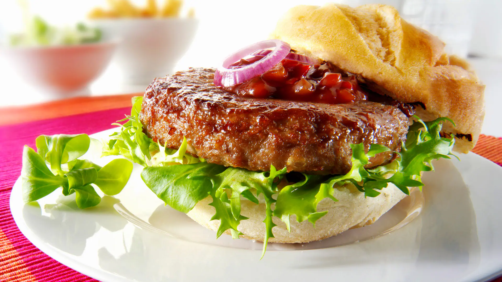

Recetas de cocina
Hamburguesas Clasicas
Esta receta te enseñará a preparar deliciosas hamburguesas caseras con ingredientes frescos y sabrosos

Ingredientes
- 500g de carne molida (preferiblemente 80% de carne magra)
- 1 huevo
- 1/4 de taza de migas de pan o pan rallado
- 1 cucharadita de sal
- 1/2 cucharadita de pimienta negra molida
- 4 panes de hamburguesa
- Lechuga, tomate, cebolla, pepino en rodajas (opcional)
- Queso, tocino, salsa BBQ, mayonesa (opcional)
Preparacion
- En un bowl grande, mezclar la carne molida, el huevo, la sal y la pimienta hasta que estén bien combinados.
- Dividir la mezcla de carne en 4 partes iguales y forma cada una en una hamburguesa
- Calentar una sartén grande o u horno a fuego medio-alto. Cocinar las hamburguesas durante 4-5 minutos por cada lado, o a gusto.
- Tostar ligeramente los panes de hamburguesa en la sartén o en el horno.
- Servir las hamburguesas en los panes tostados, acompañadas de tus ingredientes y condimentos elegidos